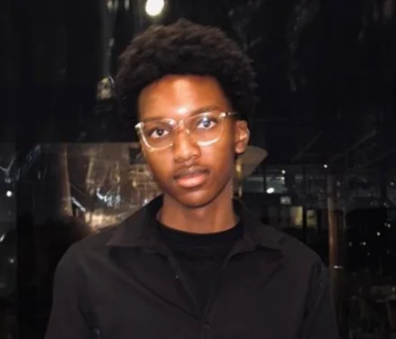

Our mission
Make Alexandra’s history approachable through clear writing, visible references and thoughtful visual storytelling.
The idea behind the archive
Alexandra’s story deserves attention, care and room to be heard. This digital museum begins with its past and present, and follows the people who give that history meaning.
Why this archive exists
The archive brings selected historical accounts into conversation with the places and community experiences that make Alexandra distinctive.
Its aim is to invite curiosity: to help visitors understand a moment, follow a source and consider whose story might still be missing.
Begin with the timeline ↗
Our direction
Make Alexandra’s history approachable through clear writing, visible references and thoughtful visual storytelling.
Begin with Alexandra and develop an approach that could one day help share African histories through text, images and sound.
Respect the people behind the story. Value community memory, acknowledge uncertainty and give readers a route back to the evidence.
Black and gold, with intention
Black centres the project’s focus on Black history. Gold expresses the richness of that history and the designer’s association with Johannesburg’s gold heritage.
The dark galleries, gold details and generous reading space are intended to feel like moving through a museum: a place to pause, look closer and carry something away.
This is the project’s design interpretation. The colours are not presented as an official historical symbol of Alexandra.
How we work with a story
Timeline and landmark entries link to the material used to write them. The research page records the author or institution, the source type and its role in the archive.
A speech, a personal recollection and a hearing transcript offer different perspectives. They should be read in context and compared where possible.
Explore research and resources ↗Generated artworks help demonstrate the project’s visual direction. They are labelled as illustrations and are not evidence of an event, person or historical scene.
Images with incomplete date or creator information carry a provenance note. Availability online does not automatically give permission to republish a work.
Read the gallery captions ↗The enquiry form provides a route to discuss possible memories, photographs or documents. It does not upload material or automatically add it to the collection.
Before publication, a contribution would need context, source checks and the contributor’s permission. Sensitive details and other people’s privacy also need consideration.
Ask about a contribution ↗If something appears inaccurate or incomplete, send the page title, the detail concerned and a supporting reference through the contact form. The evidence can then be reviewed.
Suggest a correction ↗
Behind the project
Website creator · WEDE5020
Alexandra Digital History Archive is an educational web development project created for the WEDE5020 Portfolio of Evidence.
The intention is to create a digital museum that feels carefully considered: useful to explore, rooted in community and expressive in its design.
This website is a student project, rather than the official website of the Alexandra Heritage Centre or a public archive service.
Step into the collection